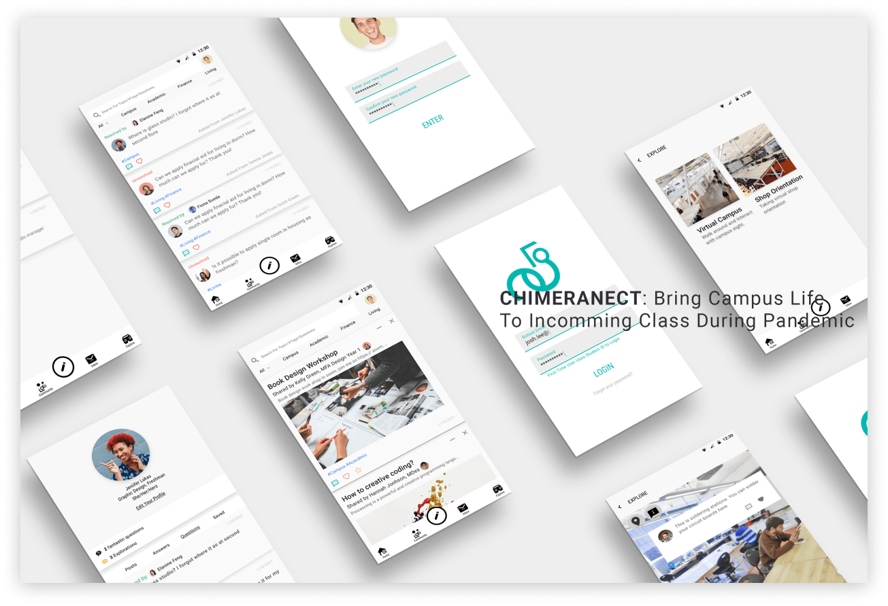

Rapid user testing
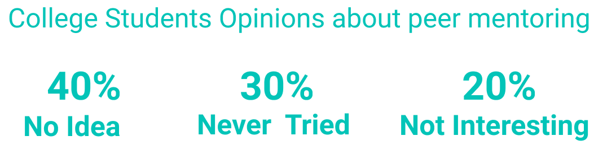
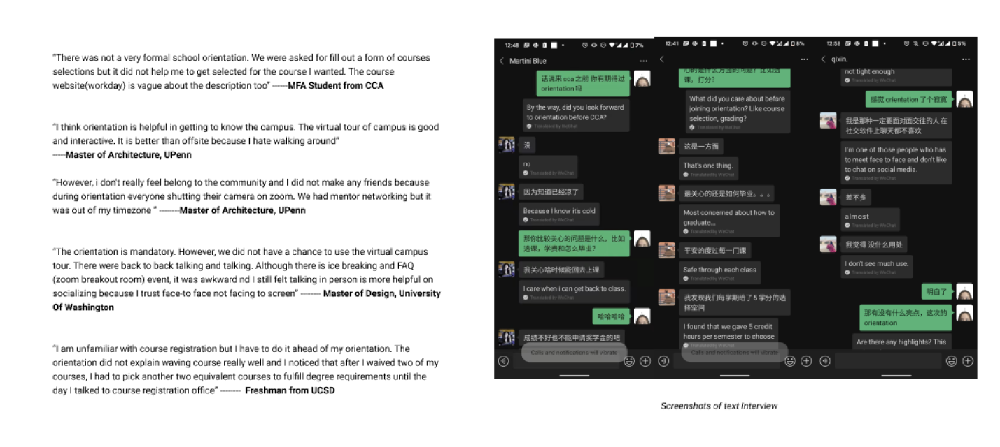
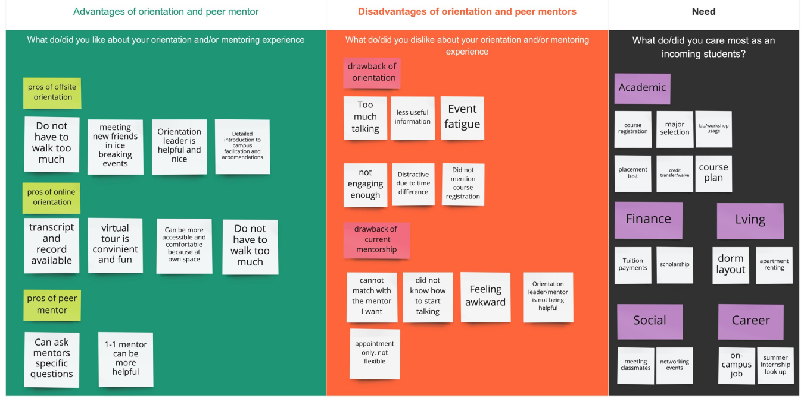
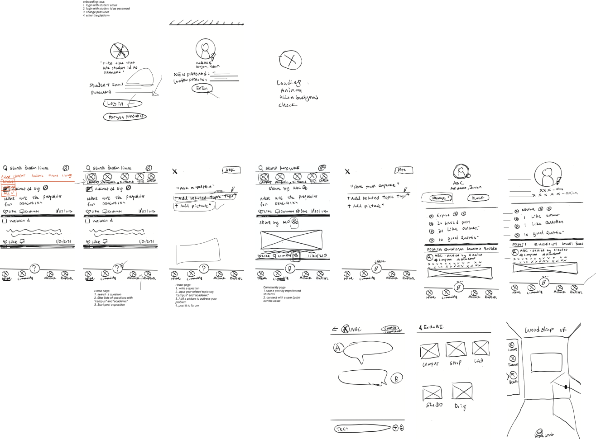
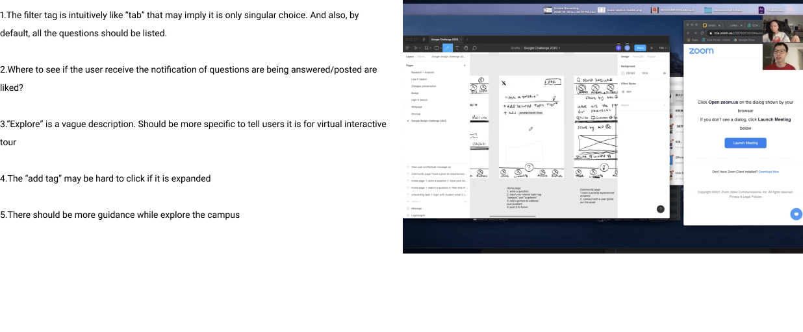
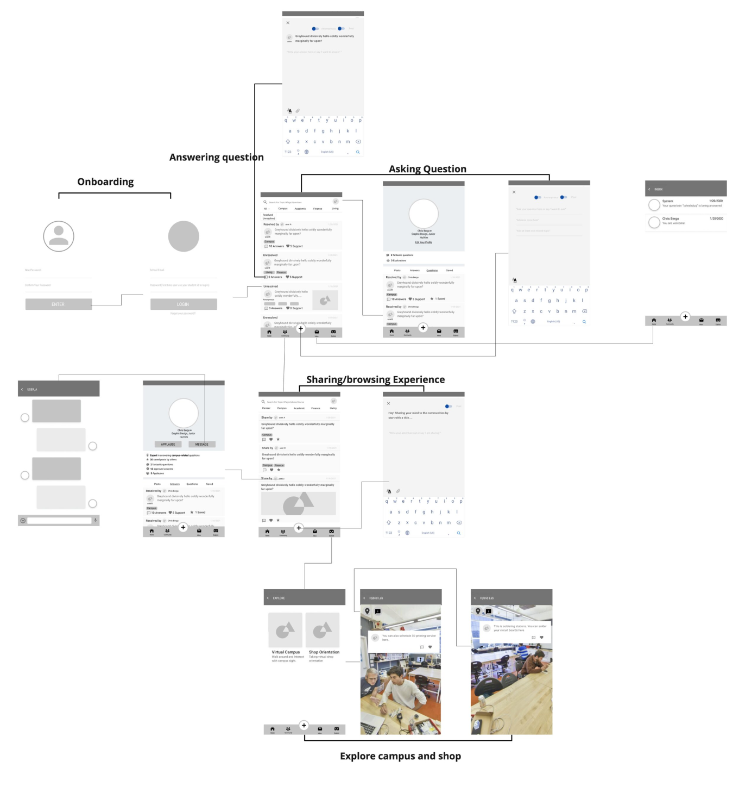
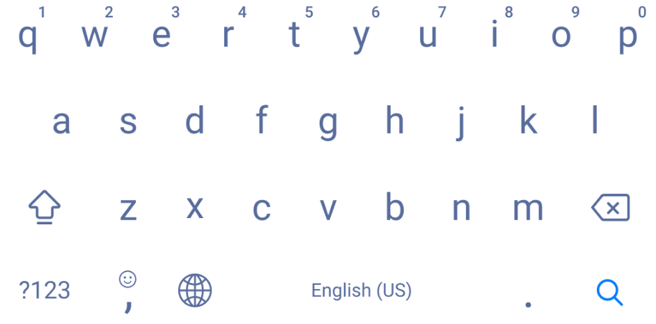
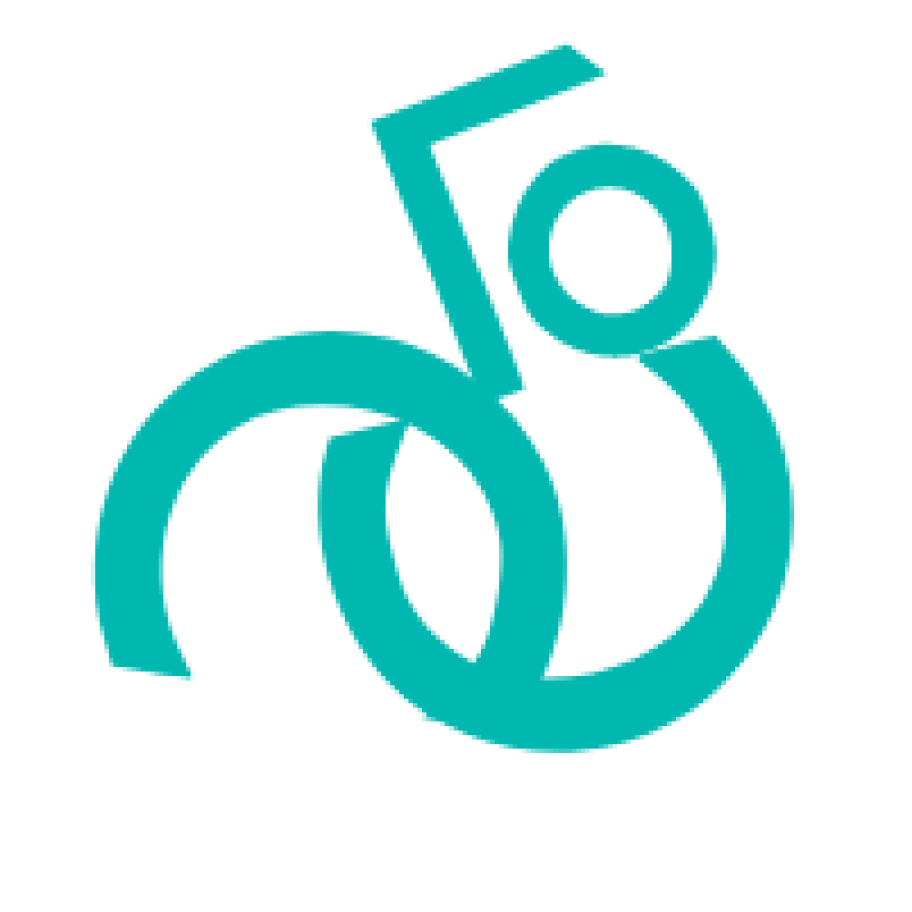
If there is more time, iteration on conducting more usability tests can help generate more insights about the efficiency of the new modules. For example, what are the design friction I might encounter when deploying virtual tour on mobile? If I am collaborating with engineers, how would I address these issues to make these functions really happen smoothly?
Project prompt:
Your school is gearing up to welcome a new incoming class and would like to help them adjust to campus life. Design an experience that allows new students to ask questions about the school life, and experienced students to share answers and advice. Consider the needs of a student who has questions, and the experience for a student who would like to give advice.
Your school is gearing up to welcome a new incoming class and would like to help them adjust to campus life. Design an experience that allows new students to ask questions about the school life, and experienced students to share answers and advice. Consider the needs of a student who has questions, and the experience for a student who would like to give advice.
Solutions & Key Features
Ask, answer, and sharing anywhere and anytime
Browse and filter with most related discussion topics
Enhance the virtual campus tour with Q&A functions
Ask, answer, and sharing anywhere and anytime
Browse and filter with most related discussion topics
Enhance the virtual campus tour with Q&A functions
Day 1
Painpoints from interview insights
Storyboards
Ideation: Features, sketches
Day 3
Rapid user testing
Day 5
Low fidelity ideation 2
Visual exploraiton
Day 7
Identify the problems of current experience
User research: interview & survey
Day 2
Paper Prototypes
Day 4
Low fidelity ideation 1
Day 6
High fidelity frames
Interactive mockups
Synthesis
Interactive mockups
Synthesis
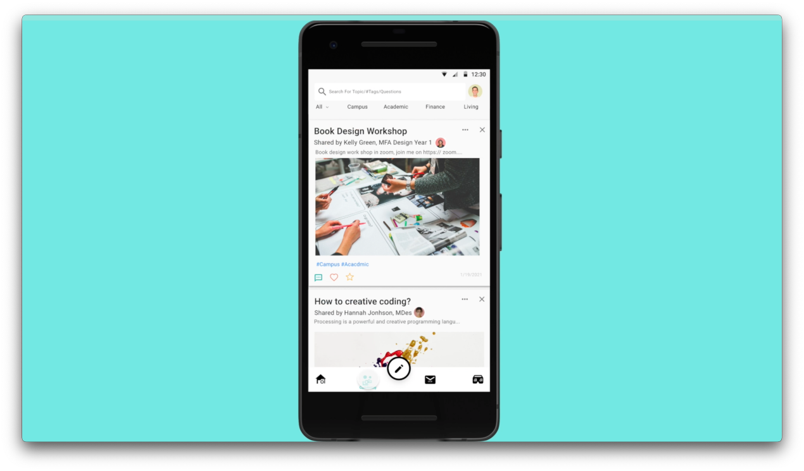
View the interactive prototypes
on https://youtu.be/IXu6MuRTUCk
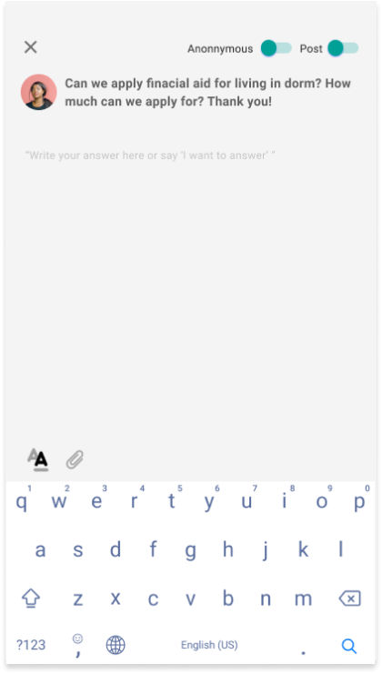
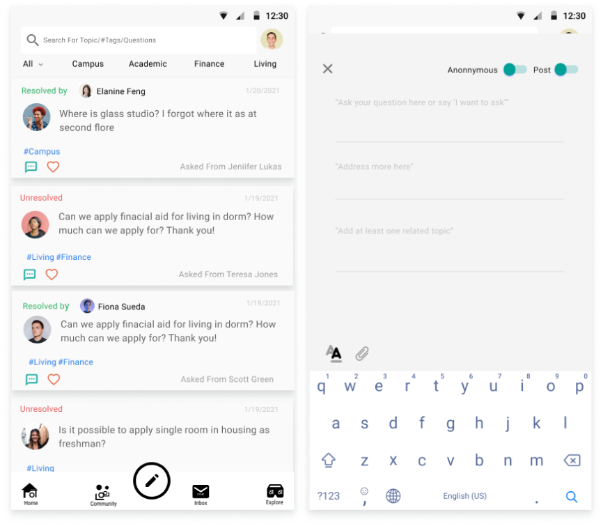
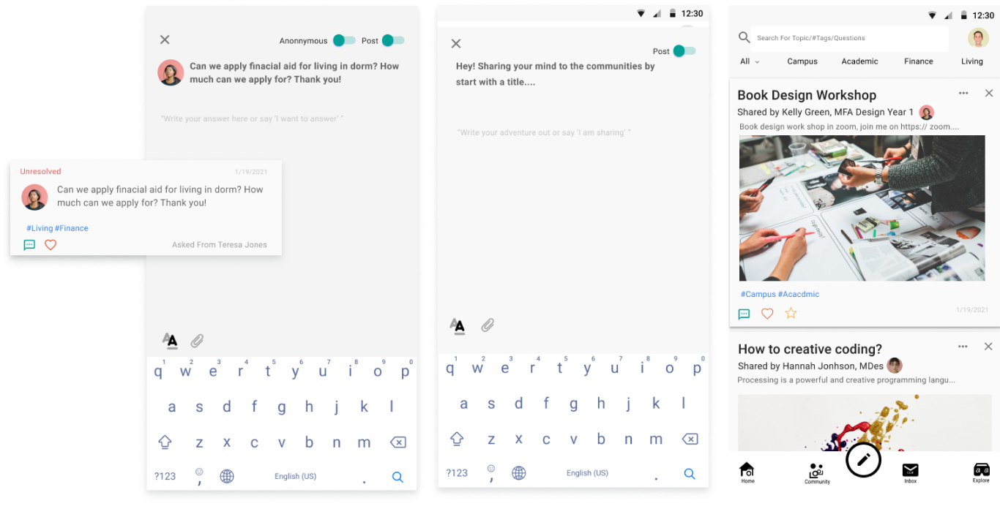
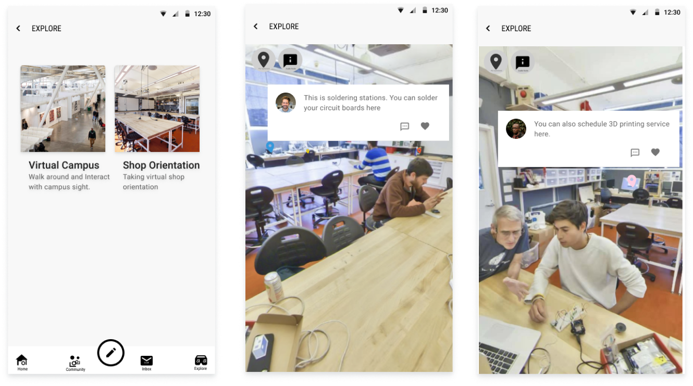
1.User Research: Interview & Survey
Overview
Conducted user interviews with 4 incomming students at different univerisities to understand how their school help them adjust the campus life through orientation and peer mentoring events.
Coducted survey wit 25 students from 5 different universities on how universities helped their new students adjust to the new campus life and engage the experienced students together via peer mentoring
Conducted 5 peer mentors who help answer questions during orientation from my school, and also 2 people who had college orientation mentor leadership.
Conducted user interviews with 4 incomming students at different univerisities to understand how their school help them adjust the campus life through orientation and peer mentoring events.
Coducted survey wit 25 students from 5 different universities on how universities helped their new students adjust to the new campus life and engage the experienced students together via peer mentoring
Conducted 5 peer mentors who help answer questions during orientation from my school, and also 2 people who had college orientation mentor leadership.
Insights
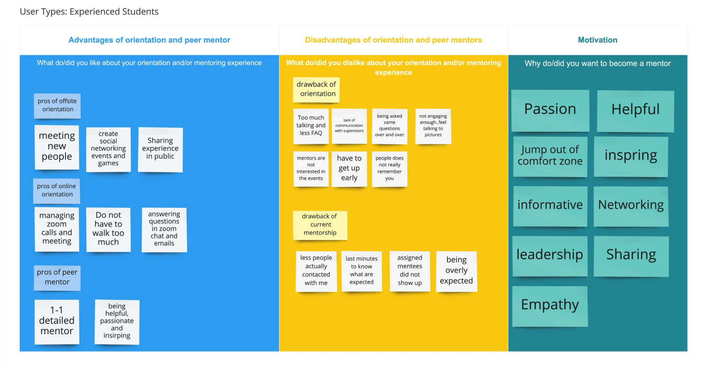
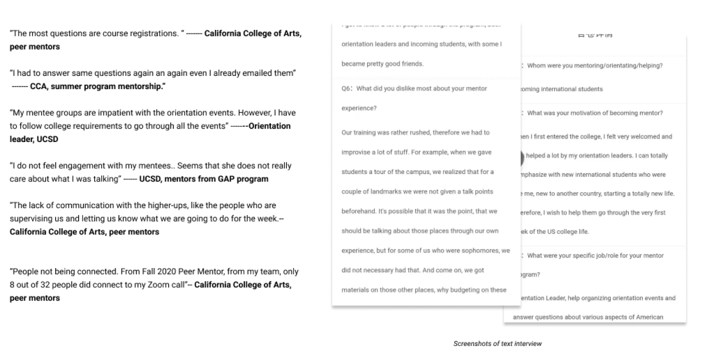
2.Identify Painpoints from Storyboards
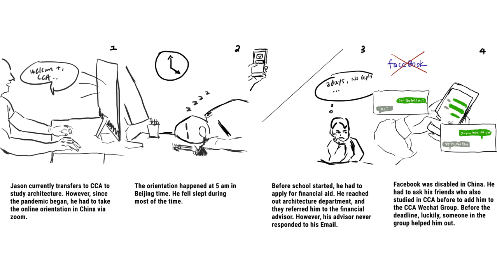
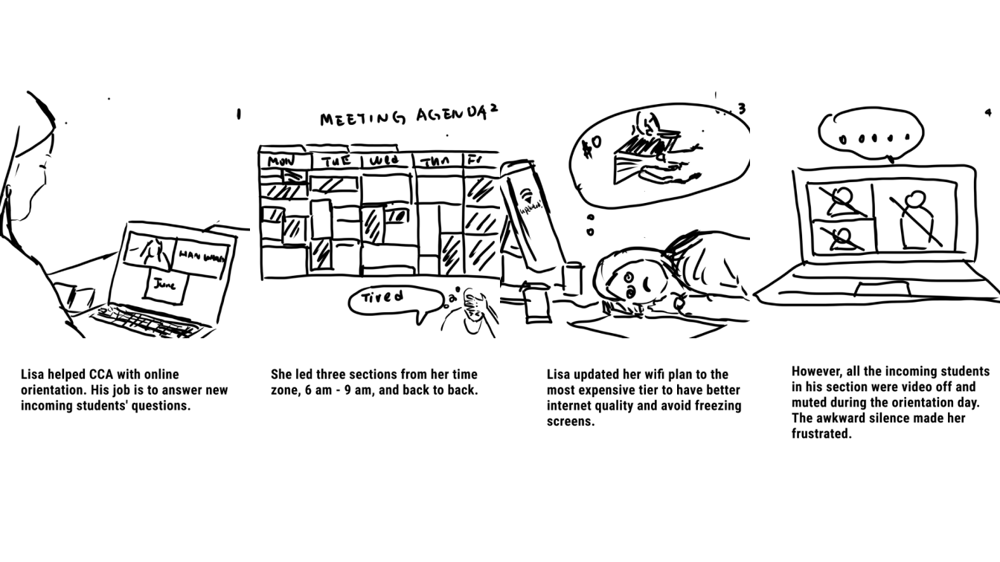
3.App features and Paper prototypes
This APP should...
Build the social connections between new students and experienced students
Minimize the cognitive load of asking, sharing, and answering.
Make new students feel welcomed and belonging to the community
Encourage the new students to be the next experienced students for the future incoming students.
Build the social connections between new students and experienced students
Minimize the cognitive load of asking, sharing, and answering.
Make new students feel welcomed and belonging to the community
Encourage the new students to be the next experienced students for the future incoming students.
4.USer Testing on PAPER prototypes
5.Low-fi Frames
6.Visual identities explorations
7.TAKEAWAYS
If there is more time, iteration on conducting more usability tests can help generate more insights about the efficiency of the new modules. For example, what are the design friction I might encounter when deploying virtual tour on mobile? If I am collaborating with engineers, how would I address these issues to make these functions really happen smoothly?